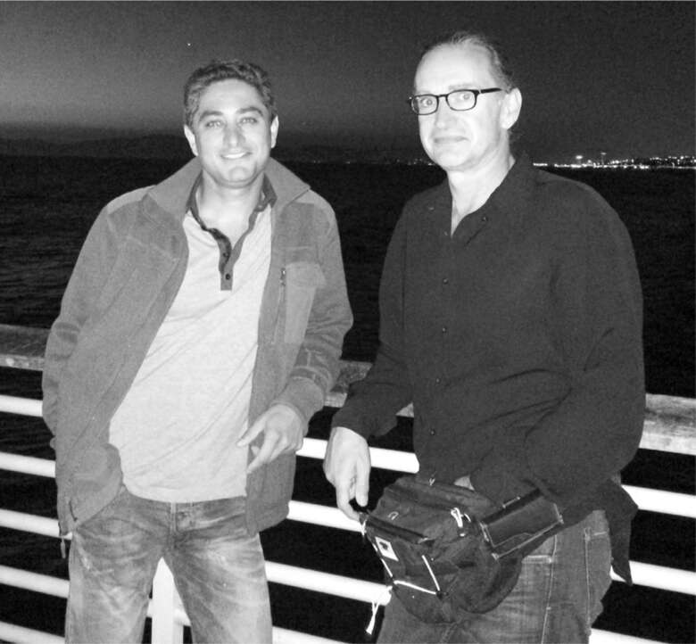

Chi phí Roadster
Musk thường nói rằng thiết kế một chiếc xe rất dễ. Phần khó là sản xuất nó. Sau khi nguyên mẫu Roadster được ra mắt vào tháng 7 năm 2006, phần khó khăn mới bắt đầu.
Chi phí mục tiêu của Roadster ban đầu vào khoảng 50.000 đô la. Nhưng sau đó là những thay đổi thiết kế của Musk cũng như những vấn đề lớn trong việc tìm kiếm hệ thống truyền động phù hợp. Đến tháng 11 năm 2006, chi phí đã tăng lên 83.000 đô la.
Điều đó đã khiến Musk làm một việc khác thường đối với một chủ tịch hội đồng quản trị: ông bay đến Anh để thăm Lotus, nhà cung cấp khung gầm, mà không nói với Martin Eberhard, CEO của mình. “Tôi thấy đây là một tình huống khá khó xử khi Elon đã yêu cầu Lotus đưa ra quan điểm riêng về thời gian sản xuất,” một trong những giám đốc điều hành của Lotus đã viết cho Eberhard.
Musk đã nhận được nhiều thông tin ở Anh. Nhóm Lotus, vốn đang phải đối phó với các thông số kỹ thuật thiết kế thay đổi nhanh chóng từ Tesla, cho biết không có cách nào họ có thể bắt đầu sản xuất thân xe Roadster cho đến cuối năm 2007, ít nhất là chậm tám tháng so với kế hoạch. Họ đưa cho ông một danh sách gồm hơn tám trăm vấn đề đã phát sinh.
Ví dụ, có vấn đề với công ty Anh mà Tesla đã ký hợp đồng để cung cấp các tấm ốp, chắn bùn và cửa bằng sợi carbon tùy chỉnh. Hôm đó là thứ Sáu, và Musk đã quyết định đến thăm nhà cung cấp một cách ngẫu hứng. “Tôi lội qua bùn đến tòa nhà này, nơi tôi thấy rằng những người của Lotus đã đúng, việc chế tạo thân xe không hoạt động,” ông nói. “Đó là một thất bại hoàn toàn.”
Cuối tháng 7/2007, tình hình tài chính đã trở nên tồi tệ hơn. Chi phí nguyên vật liệu cho đợt sản xuất đầu tiên ước tính lên tới 110.000 đô la mỗi chiếc xe, và công ty được dự đoán sẽ cạn kiệt tiền mặt trong vài tuần tới. Đó là lúc Musk quyết định gọi một đội SWAT.
Năm 12 tuổi, Antonio Gracias đã xin được tặng cổ phiếu của Apple Computer vào dịp Giáng sinh. Không phải máy tính; cậu đã có một chiếc Apple II đời đầu. Cậu muốn cổ phiếu của công ty. Mẹ cậu, người điều hành một cửa hàng đồ lót nhỏ ở Grand Rapids, Michigan, chỉ nói được tiếng Tây Ban Nha, nhưng bà đã xoay sở mua cho cậu mười cổ phiếu với giá 300 đô la. Cậu vẫn giữ chúng. Giờ chúng trị giá khoảng 490.000 đô la.
Một trong những thương vụ kinh doanh đầu tiên của Gracias khi còn là sinh viên tại Đại học Georgetown là mua bao cao su số lượng lớn và gửi cho một người bạn ở Nga để bán. Việc này cuối cùng không thành công, nên cậu có một lượng lớn bao cao su trong ký túc xá. Cậu bỏ chúng vào hộp diêm, bán quảng cáo trên hộp và phân phối tại các quán bar và hội nam sinh.
Gracias đã có việc tại Goldman Sachs ở New York, nhưng bỏ việc để học Trường Luật Đại học Chicago. Hầu hết sinh viên luật, đặc biệt là ở một nơi như Chicago, đều thấy công việc chiếm hết thời gian, nhưng Gracias lại thấy chán. Bên cạnh đó, cậu bắt đầu một quỹ đầu tư mua lại các công ty nhỏ. Một trong số đó có vẻ đặc biệt hứa hẹn: một công ty ở California chuyên mạ điện. Nhưng hóa ra đó là một mớ hỗn độn. Gracias thấy mình phải đi lại California để cố gắng khắc phục sự cố tại nhà máy, trong khi một người bạn học luật tên là David Sacks ghi chép bài giảng cho cậu. (Hãy nhớ những cái tên này, Antonio Gracias và David Sacks, vì họ sẽ xuất hiện lại trong câu chuyện về Twitter.)
Vì Gracias nói tiếng Tây Ban Nha giống như hầu hết công nhân nhà máy, cậu có thể tìm hiểu từ họ về những vấn đề đang gặp phải. "Tôi nhận ra rằng nếu bạn đầu tư vào một công ty, bạn nên dành toàn bộ thời gian của mình ở phân xưởng", cậu nói. Khi cậu hỏi làm thế nào để tăng tốc mọi thứ, một công nhân giải thích rằng việc sử dụng các bể nhỏ hơn cho bể mạ niken sẽ giúp quá trình mạ diễn ra nhanh hơn. Những ý tưởng đó và các ý tưởng khác từ công nhân đã thành công đến mức nhà máy bắt đầu có lãi, và Gracias bắt đầu mua thêm các công ty gặp khó khăn.
Cậu đã học được một bài học rất lớn từ những thương vụ này: "Không phải sản phẩm dẫn đến thành công. Đó là khả năng sản xuất sản phẩm một cách hiệu quả. Đó là việc xây dựng cỗ máy tạo ra cỗ máy. Nói cách khác, làm thế nào để bạn thiết kế nhà máy?" Đó là một nguyên tắc chỉ đạo mà Musk sẽ tự mình áp dụng.
Sau khi tốt nghiệp trường luật, David Sacks đã cùng Musk đồng sáng lập PayPal. Gracias là một nhà đầu tư, và cậu cùng Musk là một trong những triệu phú mới đến Las Vegas để ăn mừng sinh nhật lần thứ ba mươi của Sacks vào tháng 5 năm 2002.
Sáu người trong bữa tiệc đang ở trong một chiếc limousine thì một trong số họ, một người bạn từ Stanford, đã nôn ở ghế sau. Khi tài xế đưa họ đến khách sạn, hầu hết những người khác đều bỏ đi. "Elon và tôi nhìn nhau và nói, chúng ta không thể bỏ mặc người lái xe tội nghiệp này với bãi nôn trong xe của anh ấy", Gracias nhớ lại. Vì vậy, họ đi cùng tài xế đến một cửa hàng tiện lợi 7-Eleven, mua khăn giấy và nước xịt vệ sinh, và dọn dẹp chiếc xe. "Elon mắc chứng Asperger", Gracias nói, "vì vậy đôi khi anh ấy có vẻ không biểu lộ cảm xúc, nhưng thực ra anh ấy rất quan tâm."
Gracias và công ty đầu tư mạo hiểm của ông, Valor Management, đã tham gia vào bốn vòng gọi vốn đầu tiên của Tesla, và vào tháng 5 năm 2007, ông gia nhập hội đồng quản trị. Đó là thời điểm Musk đang tìm hiểu nguyên nhân sâu xa của các vấn đề sản xuất với Roadster, và ông đã nhờ Gracias tìm ra vấn đề. Để được hỗ trợ, Gracias đã liên hệ với một cộng sự đặc biệt, người có khả năng phi thường trong việc hiểu biết về các nhà máy.
Sau khi vực dậy công ty mạ điện của mình, Gracias đã mua lại một số công ty tương tự, bao gồm một công ty có một nhà máy nhỏ ở Thụy Sĩ. Khi ông bay đến đó để kiểm tra, người đón ông ở sân bay là một kỹ sư robot người Anh tóc đuôi ngựa tên là Tim Watkins, mặc áo phông đen, quần jean và đeo túi bao tử đen. Mỗi khi nhận nhiệm vụ mới, anh ta sẽ đến một cửa hàng địa phương và mua một túi mười chiếc áo phông và quần jean, rồi thay chúng như một con thằn lằn lột da trong suốt thời gian lưu trú.
Sau bữa tối thong thả, Watkins đề nghị họ đi xem nhà máy. Gracias biết rằng nhà máy không có giấy phép hoạt động ca đêm, vì vậy ông đã cảnh giác khi Watkins và quản lý nhà máy chở ông đến một con hẻm phía sau của một khu công nghiệp. "Trong giây lát, tôi đã nghĩ rằng họ có thể cướp tôi", Gracias thừa nhận. Watkins, với phong cách kịch tính, mở tung cửa sau. Đèn đã tắt và trời tối đen như mực, nhưng có tiếng máy dập hoạt động với tốc độ cao. Khi Watkins bật đèn lên, Gracias nhận ra rằng chúng đang tự quay, không có công nhân nào trong xưởng.
Quy định của Thụy Sĩ quy định rằng công nhân không được làm việc quá mười sáu giờ mỗi ngày. Vì vậy, Watkins đã thiết lập lịch trình hai ca tám giờ, cách nhau bốn giờ, khi máy móc sẽ tự vận hành. Anh ta đã nghĩ ra một công thức dự đoán khi nào mỗi phần của quy trình cần sự can thiệp của con người. "Chúng tôi có thể đạt được năng suất hai mươi tư giờ với mười sáu giờ lao động mỗi ngày", anh nói. Gracias đã mời Watkins làm đối tác trong công ty của mình, và họ trở thành tri kỷ, thậm chí ở chung phòng, khi họ cùng phát triển một tầm nhìn chung về cách tiếp cận các công ty sản xuất và làm cho chúng hoạt động hiệu quả hơn. Và đó là những gì họ bắt đầu làm cho Musk và Tesla vào năm 2007.
Nhiệm vụ đầu tiên là giải quyết vấn đề với nhà cung cấp sợi carbon, chắn bùn và cửa xe của Anh. Sau chuyến thăm của Musk đến công ty, ông đã có một số cuộc trao đổi căng thẳng với các nhà quản lý của họ. Vài tháng sau, họ gọi và nói rằng họ sẽ từ bỏ. Họ không thể đáp ứng các yêu cầu của ông, và họ đang hủy hợp đồng.
Ngay khi nhận được tin, Musk đã gọi cho Watkins ở Chicago. "Tôi đang lên máy bay. Tôi sẽ đón anh ở Chicago, và chúng ta sẽ giải quyết việc này", ông nói. Ở Anh, họ đóng gói một số máy móc lên máy bay và bay đến Pháp, nơi một công ty khác, Sotira Composites, đã đồng ý tiếp nhận công việc. Musk lo lắng rằng công nhân ở Pháp không tận tâm như ông, vì vậy ông đã có một bài phát biểu động viên họ. "Làm ơn đừng đình công hoặc đi nghỉ ngay bây giờ, nếu không Tesla sẽ chết", ông cầu xin. Sau bữa tối tại một lâu đài ở thung lũng Loire, ông để Watkins lại để hướng dẫn người Pháp cách làm việc với sợi carbon và làm cho dây chuyền sản xuất của họ hiệu quả.
Vấn đề với các tấm thân xe khiến Musk lo lắng về các bộ phận khác trong chuỗi cung ứng, nên ông đã yêu cầu Watkins xem xét lại toàn bộ hệ thống. Những gì Watkins tìm thấy là một cơn ác mộng. Quy trình bắt đầu ở Nhật Bản, nơi sản xuất các cell pin lithium-ion. Bảy mươi cell này được dán lại với nhau thành từng khối, sau đó được vận chuyển đến một nhà máy tạm bợ trong rừng rậm Thái Lan, nơi trước đây từng sản xuất vỉ nướng thịt. Tại đó, chúng được lắp ráp thành bộ pin với một mạng lưới ống làm cơ chế làm mát. Những bộ pin này không thể vận chuyển bằng máy bay, vì vậy chúng được vận chuyển bằng tàu thủy đến Anh và sau đó được chở bằng xe tải đến nhà máy Lotus, nơi chúng được lắp ráp vào khung gầm Roadster. Các tấm thân xe đến từ nhà cung cấp mới ở Pháp. Khung xe có gắn pin sau đó sẽ được vận chuyển qua Đại Tây Dương và qua kênh đào Panama đến cơ sở lắp ráp của Tesla gần Palo Alto. Tại đó, một đội ngũ chịu trách nhiệm lắp ráp cuối cùng, bao gồm cả động cơ và hệ thống truyền động của AC Propulsion. Khi đến tay khách hàng, các cell pin đã đi một vòng quanh thế giới.
Điều này không chỉ gây ra ác mộng về hậu hậu cần mà còn là vấn đề về dòng tiền. Mỗi cell pin ở đầu hành trình có giá 1,5 đô la. Tính cả chi phí nhân công, một bộ pin hoàn chỉnh gồm chín nghìn cell có giá 15.000 đô la. Tesla phải trả trước toàn bộ chi phí, nhưng phải mất chín tháng những bộ pin này mới đến được đích và được bán trong một chiếc xe hơi cho người tiêu dùng. Các bộ phận khác trong quy trình cung ứng dài cũng ngốn tiền mặt tương tự. Việc thuê ngoài có thể tiết kiệm chi phí, nhưng nó có thể ảnh hưởng đến dòng tiền.
Vấn đề càng trở nên trầm trọng hơn do thiết kế của chiếc xe, một phần do sự can thiệp của Musk, đã trở nên quá phức tạp. "Đó chỉ là một đống rác đang cháy ngùn ngụt của sự ngu ngốc", Musk sau này thừa nhận. Khung gầm đã nặng hơn 40% và phải được thiết kế lại để phù hợp với bộ pin, điều này làm mất hiệu lực bài kiểm tra va chạm mà Lotus đã thực hiện. "Nhìn lại, lẽ ra nên bắt đầu với một thiết kế hoàn toàn mới và không cố gắng sửa đổi Lotus Elise", ông nói. Đối với hệ thống truyền động, hầu như không có công nghệ nào của AC Propulsion tỏ ra khả thi cho một chiếc xe sản xuất hàng loạt. "Chúng tôi đã làm hỏng mọi thứ theo đủ mọi cách", Musk nói.
Khi Watkins đến trụ sở chính của Tesla ở California để giải quyết mớ hỗn độn này với Eberhard, ông đã bị sốc khi phát hiện ra rằng không có danh sách vật tư cho việc sản xuất Roadster. Nói cách khác, không có hồ sơ đầy đủ về từng bộ phận tạo nên chiếc xe và Tesla đã trả bao nhiêu cho mỗi bộ phận. Eberhard giải thích rằng ông đang cố gắng chuyển sang hệ thống SAP để quản lý thông tin đó, nhưng ông không có giám đốc tài chính để tổ chức việc chuyển đổi. "Bạn không thể sản xuất một sản phẩm mà không có danh sách vật tư", Watkins nói với ông. "Có hàng chục nghìn linh kiện trên một chiếc xe, và bạn đang bị bủa vây bởi vô số vấn đề nhỏ nhặt."
Khi Watkins tổng hợp lại chi phí thực tế, ông nhận ra rằng mọi thứ còn tồi tệ hơn cả những dự đoán bi quan nhất. Những chiếc Roadster đầu tiên xuất xưởng sẽ có giá, bao gồm cả chi phí chung, ít nhất là 140.000 đô la, và nó sẽ không giảm xuống dưới 120.000 đô la ngay cả khi sản lượng tăng lên. Ngay cả khi họ bán chiếc xe với giá 100.000 đô la, họ vẫn sẽ bị mất rất nhiều tiền.
Watkins và Gracias đã trình bày những phát hiện đáng buồn này cho Musk. Chuỗi cung ứng ngốn tiền mặt và chi phí của chiếc xe sẽ khiến công ty mất hết tiền—bao gồm cả tiền đặt cọc của khách hàng để đặt trước Roadster—trước khi công ty có thể bắt đầu bán xe với quy mô lớn. "Đó là", Watkins nói, "một khoảnh khắc tồi tệ."
Sau đó, Gracias kéo Musk ra một góc. "Thế này không ổn," anh nói. "Eberhard không trung thực về các con số."

Antonio Gracias và Tim Watson.